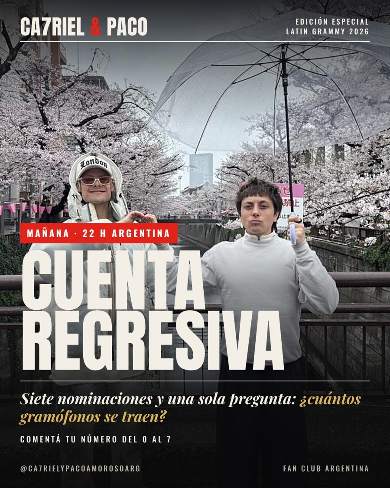

Mié 11 · 21:06 hPostPublicado
Cuenta regresiva
MAÑANA ES LA NOCHE 🏆 CA7RIEL & Paco Amoroso llegan a los Latin Grammy 2026 con 7 nominaciones por Free Spirits. ¿Cuántos gramófonos se traen? Dejá tu número del 0 al 7 👇 📺 Jueves 12/11 · 22 h (ARG) · TNT y HBO Max #CA7RIEL #PacoAmoroso #LatinGRAMMY #FreeSpirits